Создание среды
Обычно под развивающей средой понимают наполнение пространства, в котором находятся дети, материалами и приспособлениями, занятия с которыми способствуют развитию ребенка. Вальдорфская педагогика с самого начала обращала внимание на значение среды, однако в ней акценты расставляются несколько по-другому.
Для того, чтобы ребенок мог беспрепятственно развернуть свою игровую активность, необходимо, чтобы он чувствовал себя хорошо, как в физиологическом, так и в психологическом плане. Создание соответствующей благоприятной душевной атмосферы — одна из основных задач воспитателя. В создании такой благоприятной атмосферы огромную роль играет помещение группы, цветовой и пространственный дизайн. Но этим среда, благоприятная для развития, не исчерпывается.
Ребенок, как правило, чувствует себя хорошо и спокойно в привычной обстановке домашнего уюта. Если мы спросим себя, чем характеризуется домашний уют, чем отличается уютный дом от дома, в котором уюта не хватает несмотря на правильно расставленную дорогую мебель и проч., то ответить на этот вопрос будет не так-то просто. Но в любом случае за уютным домом везде ощущается заботливая рука хозяйки. Это — «обжитое» помещение, пространство жизни, в котором обитателям и гостям хорошо.
Иное дело государственное учреждение! Здесь никто не живет, но все приходят сюда «на работу» от и до. Поэтому, например, больной всегда чувствует себя лучше в домашней обстановке, чем в больнице, даже и хорошо оборудованной. Хорошая клиника пытается создать у себя обстановку, максимально приближенную к домашней, чтобы больным было в ней уютно!
Если маленький ребенок попадает в атмосферу государственного учреждения — в ясли или сад, — в котором никто не живет, но все только работают, он чувствует себя неуютно, нехорошо и начинает болеть, несмотря на оснащенность «оборудованием» и научно-обоснованные программы. Неслучайно в Европе вальдорфские детские сады часто бывают частными инициативами родителей и воспитателей, создающих для своих детей соответствующую атмосферу, а муниципальные вальдорфские детские сады все равно персонифицированы. Например, город Зиген на севере Германии выделил под вальдорфский муниципальный детский сад шикарный особняк. Тем не менее все знают, что этот детский сад — дело госпожи X., являющейся «хозяйкой» этого удивительного «учреждения». Неслучайно во вторую половину дня в него любят приходить дети окрестных жителей — детский сад открыт для таких свободных посещений детей, это один из пунктов его концепции. Дети приходят туда с удовольствием, потому что чувствуют себя там хорошо, как дома.
Создать в детском саду атмосферу, приближающуюся к домашнему уюту, — это первая задача. В условиях нашей страны, если вальдорфская группа работает в рамках государственного детского сада, очень многое зависит от администрации (заведующей), удастся ли ей создать такие взаимоотношения с воспитателями, чтобы те не чувствовали себя «подчиненными», приходящими «на работу», но ощущали бы себя «хозяйками» группы. Неформальное, заинтересованное отношение воспитателя к своей работе — совершенно необходимое условие успеха вальдорфского детского сада. Воспитание — это не технологии, которые могут быть запущены в обход человека, в которых человек — лишь заменяемый элемент.
Итак, в группе должны быть хозяин или хозяйка, создающие и поддерживающие атмосферу — важнейший элемент «развивающей среды».
Р. Штайнер — первый из педагогов, заговоривших о влиянии дизайна помещений и вообще архитектуры зданий на душевное самочувствие людей. В настоящее время значение архитектуры и дизайна для детских садов и школ получило широкое признание. Движение вальдорфских школ и детских садов затратило немало усилий для разработки особой культуры архитектуры и дизайна, так что вальдорфские детские сады и школы в странах Европы можно зачастую узнать по их внешнему виду и внутреннему оформлению. Имея дело со стандартизированными помещениями обычных детсадовских групп, вальдорфцы решают первую задачу — их «обжить», сделать уютными для жизни детей и взрослых.
Мы уже говорили о том, что ребенок-дошкольник — это «орган чувств», открытый для всего, что происходит в окружении. Все полезные и вредные влияния беспрепятственно проникают внутрь ребенка и действуют формирующе на его организм. Вот почему оформлению помещения следует придавать такую большую роль.
...Начинаем с окраски помещения. Вальдорфские педагоги говорят, что для маленьких детей наиболее благоприятен теплый, розовый тон стен. При этом отдается предпочтение поверхностям, равномерно окрашенным масляной или водоэмульсионной краской, применяется особый способ покраски, когда краска наносится послойно несколько раз (техника лессировки). При этом один слой накладывается на другой, в результате чего получается особый «дышащий» колорит, окраска получает структуру и становится живой. Для оживления помещения рекомендуется «сгладить углы» — придать интерьеру округлые формы. Для этого можно использовать драпировку из ткани или другие способы. Хорошо, если шторы на окнах тоже будут теплых тонов, и окна будут производить приятное впечатление.
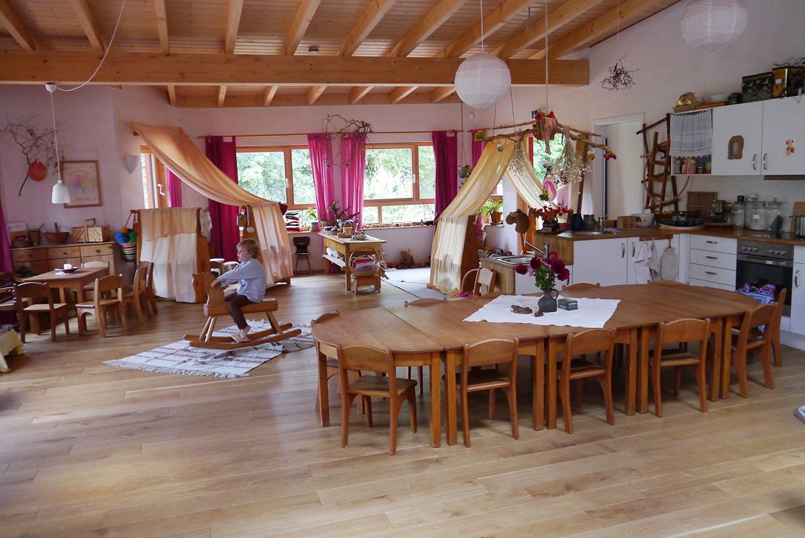 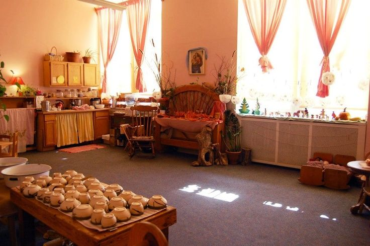 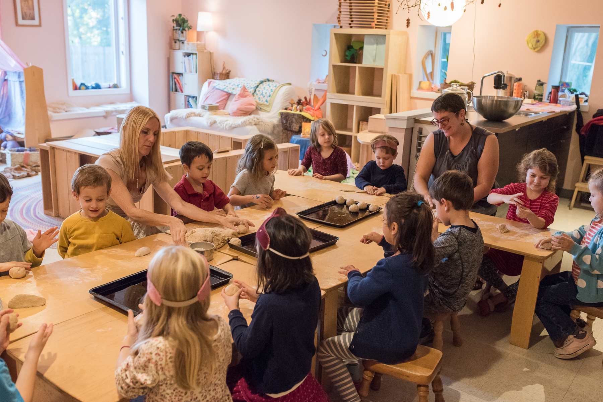 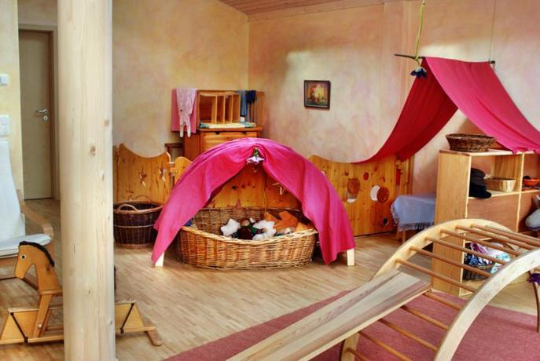 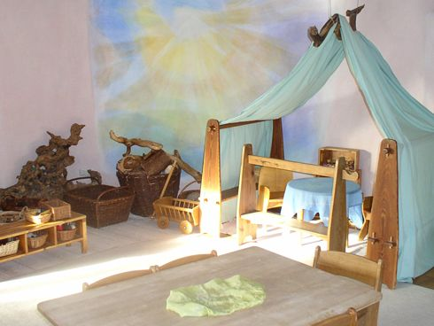 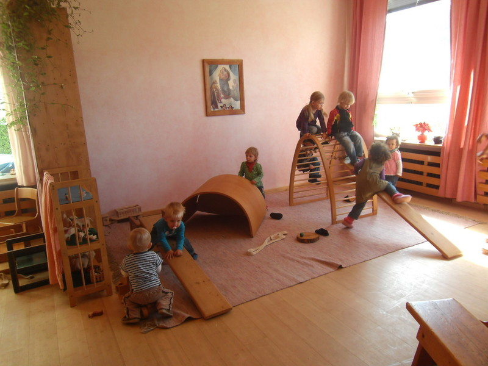 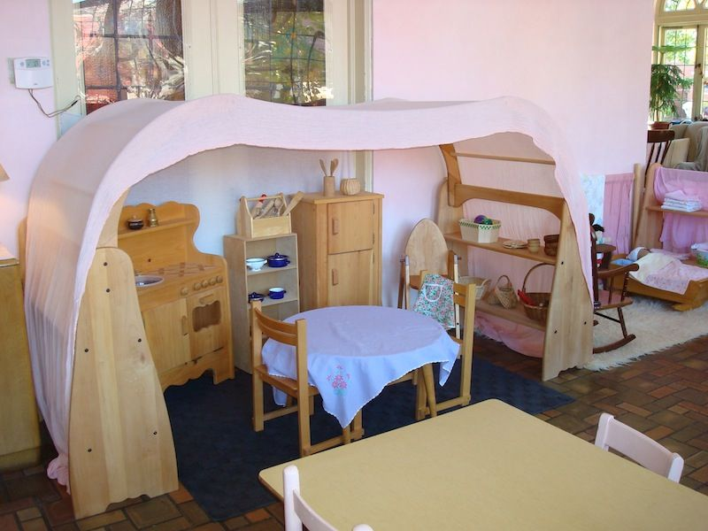 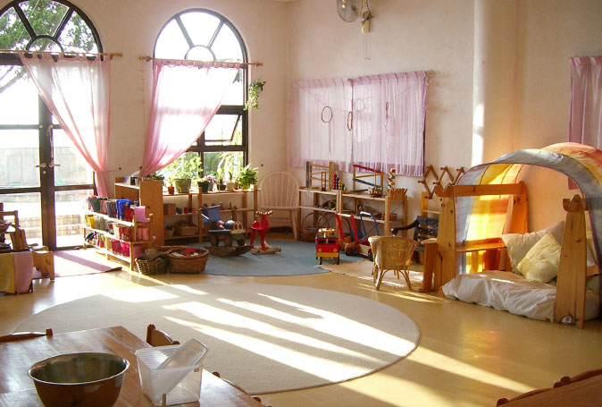 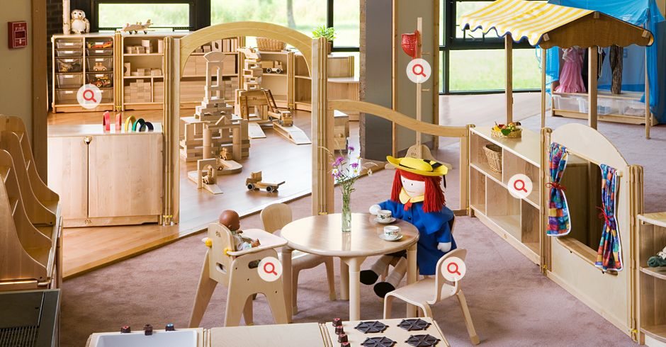 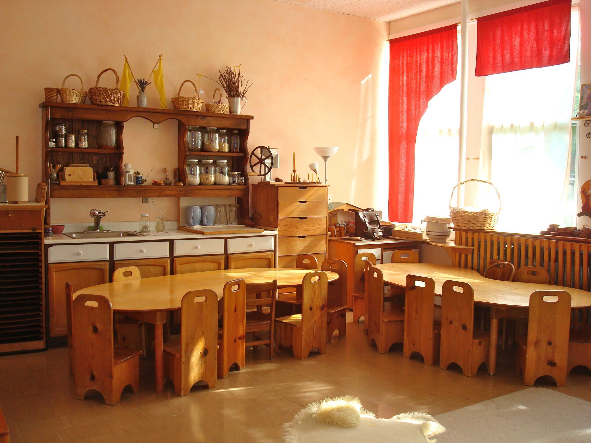 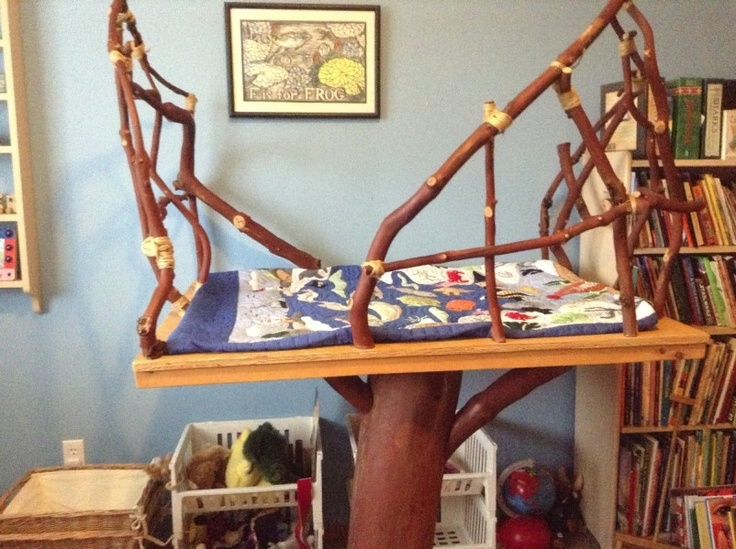 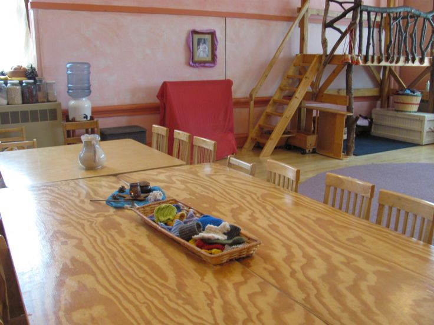Приветствуется, если в покраске стен, а также в оформлении интерьера участвуют воспитатели и родители детей, а не просто бригада строителей, работающих по заданным эскизам. Участие родителей в оформлении помещений, как и в жизни группы в целом, поощряется.
Имея дело с помещениями для жизни детей, нужно учитывать, что дети маленькие — и большое открытое пространство несоразмерно их мироощущению, оно вызывает у них чувства душевного дискомфорта. Дети любят создавать небольшие замкнутые пространства, например, забираться под стол, накрытый материей, строить шалаш и т. д. В этом выражается тяга детей к такому объему пространства, который им легко обжить. Поэтому задача — разделить помещение, выделив в нем сравнительно небольшие пространственные единицы — «игровой уголок», «кухню» — и сравнительно большое свободное пространство для разного рода общих занятий — музыкально-ритмических игр, эвритмии, кукольного театра и т. д.
Все помещение группы снизу, как правило, обшивается деревянными досками. В игровой части группы на деревянную обшивку прикрепляются полки, на которые ставятся различные игровые материалы. Полки должны располагаться по росту детей, а игровой материал — быть в любой момент доступным детям. Весь игровой материал, как правило, распределяется по корзинам — в каждой корзине особый вид материала: строительный материал, шерсть, платки, шишки, каштаны и т. д. Другие игрушки — куклы, гномы — просто стоят сами по себе. Раз установленный порядок на полках стараются поддерживать.
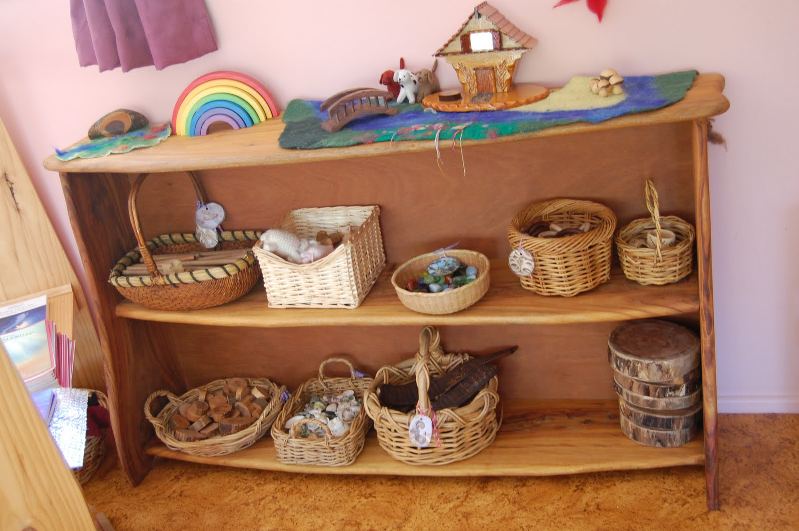 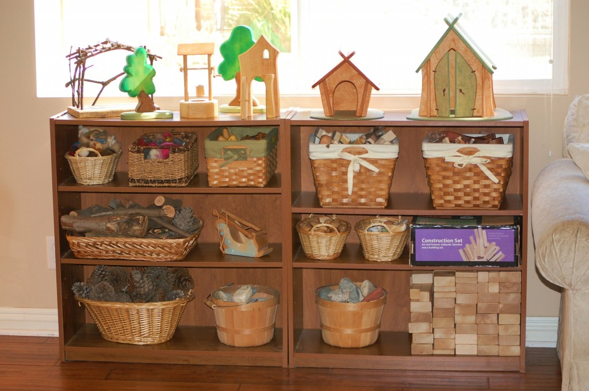Об оснащении игрового уголка и о роли мебели в игре мы уже говорили в разделе, посвященном игре. Тем не менее скажем еще раз и об этом в связи с созданием развивающей среды, в противном случае наше изложение будет неполным.
Важным элементом оборудования игровой части группы являются деревянные ширмы-полки, которые дети могут переставлять с места на место и таким образом делить пространство, как это диктует логика игры (см. главу об игре). Такая ширма может быть, например, магазином с прилавком, или может стать домиком, если объединить две ширмы и накрыть их платком и т. д. Можно создать маленькую комнатку или врачебный кабинет и проч.
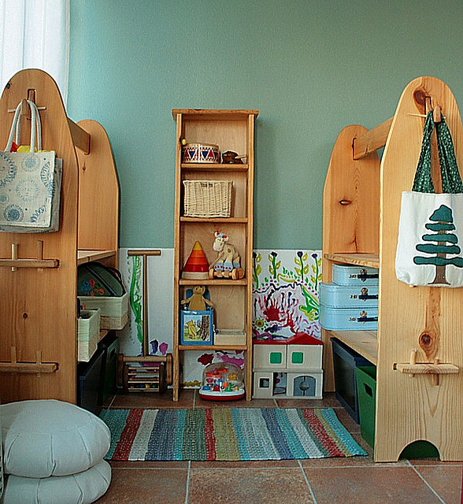 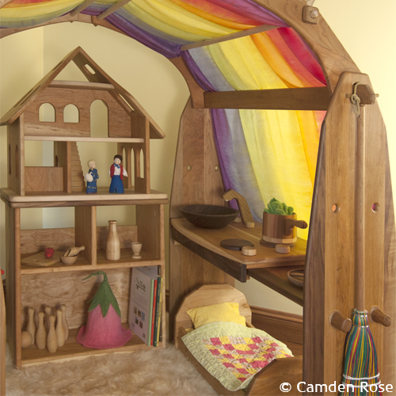Все оборудование детского сада должно быть соразмерно ребенку. Идеальный вариант — специально изготовленные деревянные столы и стулья, которые могут быть использованы многофункционально. Столы, которые состоят из отдельных столиков, которые можно собирать и разбирать, составляя различные сочетания, и использовать в игре. Маленькие деревянные стульчики также могут стать подходящим материалом для развертывания игры и стройки. Еще раз заметим: все оборудование детского сада и игровой материал должны быть из натуральных, естественных материалов.
О богатом игровом материале и игрушках, являющихся неотъемлемым элементом среды, см. раздел об игре.
Важное место в интерьере принадлежит праздничному уголку, который часто называют «стол времен года». Им может быть не только стол, но и тумбочка или что-либо подобное. Как правило, его накрывают материей различных цветов, чтобы создавалось гармоничное, теплое и даже немного торжественное ощущение.
Цвет покрывала подбирается в созвучии с настроением времени года и праздником. Зима — самое темное время года. Ей соответствуют темно-фиолетовые тона, в то время как на Рождество темнота осветляется — до голубого цвета. Весне соответствует свежий зеленый цвет, лету — желтый, ближе к осени появляются красновато-оранжевые оттенки, которые на праздник Михаила переходят в сияющий, теплый красный. Тот, в свою очередь, постепенно переходит в пурпурно-фиолетовый. Таким образом, в ходе года на праздничном столе появляется весь цветовой круг Гете. Естественно, что данный подход, основанный на гетевском цветовом круге, — это один из возможных подходов к оформлению стола времен года (предложен Фрейей Яффке в книге «Праздники в детском саду»).
Стол времен года имеет свое особое место. Это своеобразный праздничный уголок, который украшается различными предметами — в зависимости от времени года или времени какого-либо праздника. Летом это могут быть полевые цветы, осенью, во время праздника урожая, — плоды земли. Это не только тыква, кабачок, но и привезенные из деревни колосья пшеницы или ржи. На Рождество здесь появляются ясли и рождественская звезда, весной — горшочек с посеянными в него зернами.
Следует отметить воспитательное и культурное значение этого праздничного уголка. Если все помещение группы имеет какую-то функциональную, «прагматическую» привязку и служит «чему-то», то наличие в помещении праздничного места, к которому дети не могут просто так подойти и начать играть в предметы, находящиеся на праздничном столе, учит детей уважению и сдержанности. Например, на праздничном столе могут стоять цветы в красивой и хрупкой вазе. Эта ваза может разбиться — и дети, даже когда они очень увлечены своей свободной игрой, никогда не будут использовать ее в качестве игрушки.